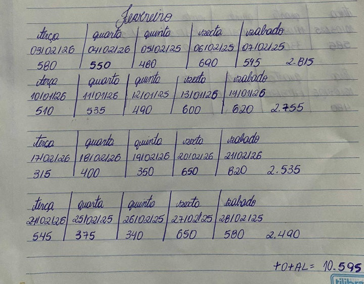
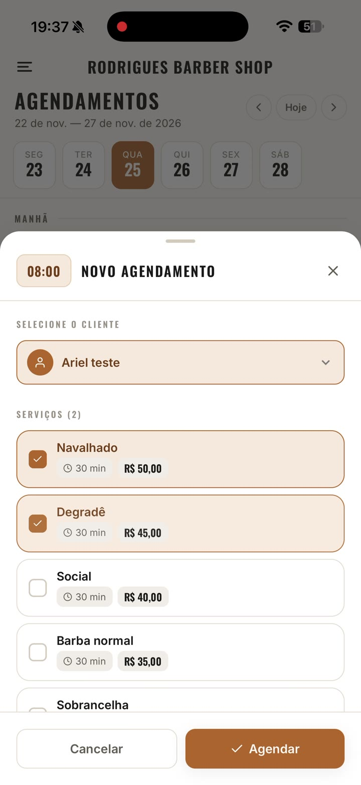
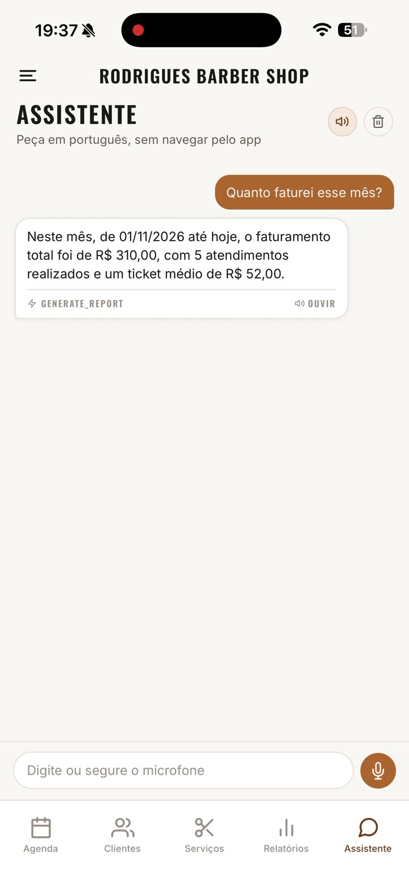

Kroma: Sistema de Gestão para Barbearia com Interface em Linguagem Natural
Roteiro
- Contextualização e problemaA barbearia, a pergunta e os objetivos
- Trabalhos relacionadosO que já existe e a lacuna
- Metodologia e requisitosEstudo de caso, processo e modelagem
- Solução desenvolvidaArquitetura, backend e aplicativo
- Interface em linguagem naturalChamada de funções com a API Gemini
- Resultados e discussãoTestes, uso real, avaliação controlada e custo
- ConclusãoContribuições, limitações e trabalhos futuros
Contextualização e problema

- Agenda de sexta e sábado no bloco de notas do celular
- Histórico dos clientes só no WhatsApp e no Instagram
- Dois clientes no mesmo horário cerca de cinco vezes
- Dono trabalha sozinho, com as mãos ocupadas
Por isso, o sistema também aceita pedidos por texto ou voz.
Pergunta de pesquisa e objetivos
Em que medida um sistema de gestão mobile, com interface em linguagem natural baseada em chamada de funções, contribui para organizar os processos operacionais de uma barbearia?
Objetivo geral: desenvolver e avaliar um app de gestão com interface em linguagem natural.
Objetivos específicos
- Levantar requisitos
- Especificar e validar
- Modelar
- Implementar
- Avaliar o assistente
- Estimar o custo
- Comparar antes e depois
Trabalhos relacionados
| Característica | T1 | T2 | T3 | T4 | T5 | T6 | T7 | Kroma |
|---|---|---|---|---|---|---|---|---|
| Domínio: barbearia ou salão | Sim | Sim | Sim | Sim | Sim | Não | Sim | Sim |
| Aplicativo mobile nativo | Não | Não | Não | Não | Não | Não | Não | Sim |
| Clean Architecture | Não | Não | Não | Não | Não | Não | Não | Sim |
| Testes documentados | Não | Não | Não | Não | Não | Não | Não | Sim |
| Interface conversacional | Não | Não | Não | Não | Não | Sim | Sim | Sim |
| Opera o sistema por linguagem natural | Não | Não | Não | Não | Não | Não | Não | Sim |
| Uso de LLM | Não | Não | Não | Não | Não | NINão identificado | NINão identificado | Sim |
- T1Two Style (Martins; Fernandes, 2019)
- T5NaRegua (Barbosa et al., 2023)
- T2BeleSys (Tamashiro; Baraçal, 2025)
- T6Projetando chatbots (Lemes, 2020)
- T3Barber Shop System (Anjos, 2025)
- T7Website para estúdio (Dias et al., 2025)
- T4BARCAMS (Furtuna et al., 2024)
- sim · não · NI não identificado
Lacuna: nenhum dos sete usa um modelo de linguagem para operar o sistema de gestão.
Processo de desenvolvimento
Requisitos
27
Requisitos funcionais
9
Requisitos não funcionais
22
Regras de negócio
- Atendimento de segunda a sábado, das 8h às 12h e das 13h15 às 19h30RN01 · RN02
- Nunca dois agendamentos no mesmo horário para o mesmo profissionalRN04
- Até 7 dias de antecedência; cancelar com menos de 1 h gera cobrançaRN09 · RN05
- O assistente passa pelas mesmas validações e não exclui nadaRN18 · RN20
Modelagem do sistema
- 3 perfis em hierarquia: Barbeiro, Supervisor e Administrador
- Preço e duração de cada serviço congelados no agendamento
- Cada comando do assistente fica registrado
- Exclusão lógica preserva o histórico
Arquitetura da solução
Android e iOS Telas, formulários e assistente por texto ou voz
Serviço externo
As regras de negócio ficam no centro e não dependem de framework, banco nem IA: o assistente reaproveita as mesmas regras do aplicativo.
Sistema desenvolvido

Chamada de funções (function calling)
- A aplicação declara cada função: nome, descrição e parâmetros
- O modelo escolhe a função e preenche os argumentos
- A aplicação executa e devolve o resultado ao modelo
Não elimina erros: o modelo ainda pode escolher mal a função ou inventar parâmetros.
Interface em linguagem natural
- App: o usuário digita ou fala o pedido
- API Kroma: envia o texto, a data e as 4 funções ao Gemini
- Modelo: escolhe a função e os parâmetros, sem executar
- Backend: executa o caso de uso com as mesmas validações
- Modelo: redige a resposta exibida no app
- QUERY_SCHEDULEconsultar agenda
- CREATE_APPOINTMENTcriar agendamento
- REGISTER_CLIENTcadastrar cliente
- GENERATE_REPORTgerar relatório
O modelo interpreta; quem executa e valida é o backend.

Entrada por voz e escolha do modelo
| Plano gratuito | 2.5-flash | 3.1-flash-lite |
|---|---|---|
| Requisições por dia | 20 | 500 |
| Comando de texto | 1,4–10,0 s | 1,5–3,2 s |
| Comando de voz | 29,1 s | 9,1 s |
- O áudio é transcrito e segue o mesmo fluxo do texto
- A instrução leva a data de hoje, para entender “amanhã”
Procedimento de avaliação
Com o dono da barbearia, no uso real, sem tarefas impostas
-
Requisitos
Cada requisito funcional conferido contra a especificação.
27 RF verificados
-
Testes automatizados
Jest no backend: unitários e integração em banco isolado.
20/09/2026
-
Antes e depois
Caderno contra aplicativo, cronometragem manual.
1 semana · 50 agendamentos
-
Assistente
Uso livre e ensaio controlado com respostas esperadas definidas antes.
50 comandos · 43 × 3 no ensaio
Concluir sem erro não é acertar: só o ensaio controlado confere função, parâmetros e efeito.
Resultados: requisitos e testes
27 de 27
Requisitos funcionais implementados
127 de 127
Testes aprovados
108 unitários e 19 de integração
52,8%
Cobertura em casos de uso e domínio
Cobertura por módulo (destaques)
- Agendamentos78,7%
- Usuários77,1%
- Autenticação30,8%
- Observações23,1%
- Serviços0%
Limites
- Medida só em casos de uso e domínio
- Serviços sem teste automatizado
- App mobile sem testes automatizados
Resultados: antes e depois
| Indicador | Caderno | Aplicativo |
|---|---|---|
| Tempo para agendar | 18,9 s | 16,6 s |
| Cadastro de cliente | não existia | 12,6 s |
| Cadastro de serviço | não existia | 10,0 s |
| Conflitos de horário | 0 | 0 |
| Retrabalho | 2 | 0 |
| Perda de informação | 0 | 0 |
- Uma medição por condição18,9 s contra 16,6 s não comprova ganho de tempo
- Sem base igual de comparaçãoo retrabalho de 2 para 0 é só descritivo
- O ganho mais claro foi centralizarclientes, serviços e relatórios num só lugar
Resultados: assistente em uso real
Comandos concluídos sem erro técnico
72,0%
36 de 50 comandos livres do dono
Sem as falhas do serviço externo
90,0%
36 de 40
Os 14 erros, por causa: 10 vieram do serviço externo
- Indisponibilidade (HTTP 503)6
- Timeout de 20 s3
- Modelo indisponível para a chave1
- Requisição inválida (HTTP 400)2
- Barrado pela regra de negócio2
- Serviço externo (10)
- Argumentos inválidos (2)
- Regra funcionando (2)
Mediana
6,5 s
Média
8,9 s
Maior tempo
29,1 s
Resultados: avaliação controlada
Execuções corretas
80,2%
101 de 126, todas
92,7%
101 de 109, com o serviço no ar
Comandos que exigem função (63 válidas)
100%
função certa
95,2%
parâmetros
92,1%
ponta a ponta
42 comandos × 3 passadas = 126 execuções
- Esperado (101)
- Erro de interpretação (8)
- Falha do serviço (17)
- 19 de 19violações de regra barradas, nenhum registro criado
- 10 de 10pedidos fora do escopo recusados
- 27 de 27comandos com o mesmo desfecho nas 3 passadas
Discussão: falhas encontradas
⚠ Risco de registro incorreto
Presumiu o que não foi dito
“Agenda o Carlos amanhã às 10:00”
Sem o serviço, assumiu “corte” e gravou nas 3 passadas.
Pedir o dado ausente antes de gravar
⚠ Risco de registro duplicado
Gravou, mas respondeu erro
Em 6 execuções o registro foi criado e a resposta final falhou. Repetir o pedido duplica.
Confirmar e evitar duplicidade
Serviço externo instável
17 de 126 execuções (13,5%): 10 timeouts e 7 HTTP 503.
Testar outros modelos e o plano pago
Datas e limite da função
Data com vírgula, “semana passada” e “dessa semana” lidas fora do esperado.
Consulta por intervalo de datas
Estimativa de custo da API
C = (Te·Pe + Ts·Ps) / 10⁶
- 3.000 tokens de entrada e 500 de saída por comando (hipótese)
- US$ 0,25 e US$ 1,50 por milhão de tokens (preço público)
- Sem áudio, hospedagem, banco e manutenção
200 comandos/mês≈ 50 por semana, como no uso real
US$ 0,30
500 comandos/mês
US$ 0,75
1.000 comandos/mês
US$ 1,50
Conclusão
Resposta à pergunta de pesquisa: em parte
Gestão da barbearia
Organizou a operação
Informações centralizadas e retrabalho reduzido no período observado
Assistente em linguagem natural
Viável, com ressalvas
92,7% de acerto com o serviço no ar, mas precisa confirmar antes de gravar
Limitações e próximos passos
- Um estabelecimento, uma semanaMais barbearias e medições repetidas
- Modelo presume dados e pode duplicar registrosConfirmar antes de gravar
- Sem testes no app nem avaliação de usabilidadeTestes no app e avaliação formal de usabilidade
Obrigado!
Referências bibliográficas
ANJOS, M. B. B. Barber Shop System: um sistema para administração de uma barbearia. TCC — Fatec Prof. Fernando Amaral de Almeida Prado, Araçatuba, 2025.
BARBOSA, C. A. et al. NaRegua: site para agendamento e gerenciamento de serviços de barbearia. TCC — Etec Prof. Massuyuki Kawano, Tupã, 2023.
BROWN, T. et al. Language models are few-shot learners. Advances in Neural Information Processing Systems, v. 33, p. 1877–1901, 2020.
DIAS, K. H. et al. Desenvolvimento de website para estúdio de beleza “Studio Ana Paula”. TCC — Etec Prof. Jadyr Salles, Porto Ferreira, 2025.
FIELDING, R. T. Architectural Styles and the Design of Network-based Software Architectures. Tese (PhD) — University of California, Irvine, 2000.
FURTUNA, H. G. et al. BARCAMS: sistema de gestão de estabelecimento de estética masculina. TCC — Etec de Poá, 2024.
GOOGLE. Function calling with the Gemini API. 2026a.
GOOGLE. Gemini Developer API pricing. 2026b.
LEMES, J. S. Projetando chatbots: extraindo informações de canais de atendimento. Dissertação (Mestrado) — PUC-SP, São Paulo, 2020.
MARTIN, R. C. Clean Architecture: a craftsman’s guide to software structure and design. Prentice Hall, 2018.
MARTINS, E. F. R.; FERNANDES, T. A. Two Style: um software de agendamento e gerenciamento. TCC — IFRN, Lajes, 2019.
PRESSMAN, R. S.; MAXIM, B. R. Engenharia de Software: uma abordagem profissional. 8. ed. AMGH, 2016.
SEBRAE. Setor de beleza tem mais de 524 novos negócios abertos por dia em 2023. 2024.
SOMMERVILLE, I. Engenharia de Software. 10. ed. Pearson, 2018.
TAMASHIRO, M. N.; BARAÇAL, M. J. F. BeleSys: sistema de gestão multiplataforma para salões de beleza. TCC — Fatec Rubens Lara, Santos, 2025.
WIEGERS, K.; BEATTY, J. Software Requirements. 3. ed. Microsoft Press, 2013.
WOHLIN, C. et al. Experimentation in Software Engineering. Springer, 2012.
Lista completa na monografia.
Diagramas de casos de uso
Diagrama entidade-relacionamento
Avaliação controlada por categoria
| Categoria | Cmd. | Exec. | Falha | Válidas | Corretas |
|---|---|---|---|---|---|
| A · Consultar agenda | 4 | 12 | 3 | 9 | 9 |
| B · Criar agendamento | 5 | 15 | 4 | 11 | 9 |
| C · Cadastrar cliente | 4 | 12 | 2 | 10 | 10 |
| D · Gerar relatório | 4 | 12 | 0 | 12 | 12 |
| E · Referência temporal | 4 | 12 | 2 | 10 | 7 |
| F · Violação de regra | 7 | 21 | 2 | 19 | 19 |
| G · Fora do escopo | 4 | 12 | 2 | 10 | 10 |
| H · Incompleto ou ambíguo | 3 | 9 | 0 | 9 | 6 |
| I · Comandos reais (sem I04) | 7 | 21 | 2 | 19 | 19 |
| Total | 42 | 126 | 17 | 109 | 101 |
| Comando (regra) | Modelo recusou | Validador barrou | Falha |
|---|---|---|---|
| F01 Conflito de horário | 0 | 2 | 1 |
| F02 Serviço inexistente | 0 | 3 | 0 |
| F03 Domingo | 3 | 0 | 0 |
| F04 Cliente inexistente | 0 | 3 | 0 |
| F05 Fora do expediente | 2 | 0 | 1 |
| F06 Antecedência máxima | 3 | 0 | 0 |
| F07 Data passada | 3 | 0 | 0 |
| Total · nenhum registro criado | 11 | 8 | 2 |
Testes por módulo e cobertura
| Módulo | Unitários | Integração | Total |
|---|---|---|---|
| Agendamentos | 25 | 5 | 30 |
| Usuários | 26 | 0 | 26 |
| Clientes | 16 | 5 | 21 |
| Relatórios | 16 | 2 | 18 |
| Período (comum) | 9 | 0 | 9 |
| Autenticação | 4 | 4 | 8 |
| Assistente (LLM) | 7 | 0 | 7 |
| Observações | 5 | 2 | 7 |
| Inicialização da aplicação | 0 | 1 | 1 |
| Serviços | 0 | 0 | 0 |
| Total · todos aprovados | 108 | 19 | 127 |
| Métrica | Cobertura | Absoluto |
|---|---|---|
| Statements | 52,82% | 383/725 |
| Branches | 64,45% | 194/301 |
| Functions | 38,05% | 51/134 |
| Lines | 56,16% | 346/616 |
Medida só nas camadas de casos de uso e domínio. Execução de 20/09/2026, Node.js 22.12.0, Jest 30.1.3, commit 62866ce.